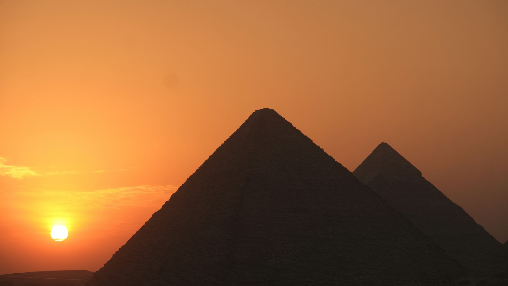

Hành Trình Khám Phá Kim Tự Tháp Ai Cập
Kim Tự Tháp Ai Cập không chỉ là một trong bảy kỳ quan cổ đại vĩ đại nhất mà còn là một minh chứng sống động về sự tài ba và kiên trì của người Ai Cập cổ đại. Được xây dựng cách đây hàng nghìn năm, những công trình này vẫn giữ được sự vững chãi và huyền bí đến ngày nay, là nơi chôn cất các pharaoh và là điểm đến hấp dẫn cho những ai yêu thích khám phá lịch sử, văn hóa và những bí ẩn chưa được giải mã. Cùng chúng tôi bước vào hành trình khám phá Kim Tự Tháp, nơi bạn sẽ tìm thấy những câu chuyện kỳ bí về kỹ thuật xây dựng, các phát hiện khảo cổ học, và những bí ẩn mà khoa học hiện đại vẫn chưa thể lý giải. Chúng tôi mời bạn tham gia vào tour ảo, trải nghiệm những không gian huyền bí trong lòng Kim Tự Tháp và chiêm ngưỡng vẻ đẹp vĩ đại của một trong những kỳ quan lớn nhất thế giới.
LỊCH SỬ
Các Kim Tự Tháp Ai Cập là những công trình vĩ đại, được xây dựng cách đây hơn 4.500 năm. Không chỉ là nơi chôn cất các Pharaoh, chúng còn là biểu tượng của nền văn minh cổ đại, với nhiều bí ẩn về kỹ thuật xây dựng và tín ngưỡng tôn giáo. Dù qua hàng nghìn năm, những kỳ quan này vẫn khiến các nhà khoa học phải nghiên cứu và tìm hiểu không ngừng.
Hãy cùng khám phá lịch sử và những bí mật thú vị đằng sau các công trình này.
Khám phá
Khám phá vẻ đẹp vĩ đại của các Kim Tự Tháp qua những câu chuyện lịch sử và bí ẩn từ nền văn minh Ai Cập cổ đại. Những công trình này không chỉ là biểu tượng của quyền lực, mà còn là minh chứng cho tài năng và trí tuệ của người Ai Cập. Mỗi Kim Tự Tháp, từ Giza đến những khu vực xa xôi, đều mang một câu chuyện riêng, giúp chúng ta hiểu rõ hơn về những thế hệ đã xây dựng và gìn giữ chúng qua hàng nghìn năm.
Tour 360
Hãy tham gia tour ảo để chiêm ngưỡng những chi tiết ấn tượng của Kim Tự Tháp mà bạn không thể tìm thấy ở bất kỳ đâu khác. Từ lối vào của các công trình đến không gian bên trong, tour ảo mang đến cho bạn một hành trình khám phá đầy thú vị và huyền bí. Bạn sẽ có cơ hội bước vào những khu vực chưa được khai thác rộng rãi, tìm hiểu về các kỹ thuật xây dựng độc đáo và chiêm ngưỡng các tác phẩm nghệ thuật cổ xưa trong từng phòng. Hãy bắt đầu chuyến hành trình và trải nghiệm không gian kỳ vĩ này ngay hôm nay!
Khám Phá Ngay Hôm Nay!
Kim Tự Tháp Ai Cập không chỉ là một kỳ quan cổ đại mà còn là một thế giới đầy bí ẩn đang chờ bạn khám phá. Hãy bắt đầu hành trình của bạn ngay hôm nay với những tour ảo, bài viết hấp dẫn, và những khám phá không giới hạn.